攻略大全 / 心金 / 魂银（详细图文） / 地图总览
召唤塔之宝可梦：圆朱舞蹈剧场 → 漩涡群岛
第 14 节 · 主线 · 途经 铃音小径、铃铛塔
若叶镇
空木研究所
回到若叶镇的空木研究所，琴音/响很佩服你已经集齐了 8 枚徽章， 空木博士也感谢你帮忙做研究。为了表达谢意，他送你一个大师球，一种能百分之百捕捉任何宝可梦的稀有精灵球！博士说这种球一般只发给有认可的宝可梦研究者，但他觉得你会比他用得更好。最好留着对付传说的宝可梦，因为它们平时很难抓。他还告诉你，一群舞女正在找你，她们在圆朱舞蹈剧场等你。
空木博士也感谢你帮忙做研究。为了表达谢意，他送你一个大师球，一种能百分之百捕捉任何宝可梦的稀有精灵球！博士说这种球一般只发给有认可的宝可梦研究者，但他觉得你会比他用得更好。最好留着对付传说的宝可梦，因为它们平时很难抓。他还告诉你，一群舞女正在找你，她们在圆朱舞蹈剧场等你。
↓ 下一站：圆朱市
圆朱市
西尔弗的考验
你走近舞蹈剧场时，劲敌（ 西尔弗）刚好走出来，还在为输给舞女们而懊恼。他警告你别因为打败了火箭队就自满，舞女们都是很强的训练家。他匆匆离开，不想看到你在他失败的地方获胜。
西尔弗）刚好走出来，还在为输给舞女们而懊恼。他警告你别因为打败了火箭队就自满，舞女们都是很强的训练家。他匆匆离开，不想看到你在他失败的地方获胜。
舞蹈剧场
进去后走上舞台，Zuki 会欢迎你。她解释说，为了请凤王（心金）/洛奇亚（魂银）回来，她们需要找到一个和宝可梦有着正确羁绊的人。她透露，当初把神奇蛋交给宝可梦爷爷、请他转交给展现出「真正潜力」的人的，正是她们。不过，光有纯粹的心意还不足以面对传说宝可梦的力量。于是 Zuki 给你一个证明自己的机会：连续打败她们五姐妹。
对战 Zuki
Zuki 就是你在桔梗市见过的女孩，她想考验你和宝可梦的羁绊有多深。
舞女 Zuki 奖金 ₽4,560
对战 Naoko
Naoko 是你在桐树林第一次见到的女孩，她目睹了 钢铁有难时你对付火箭队的样子。
钢铁有难时你对付火箭队的样子。
舞女 Naoko 奖金 ₽4,560
对战 Miki
Miki 看到你赶走了在舞蹈剧场为难她的火箭队手下。
舞女 Miki 奖金 ₽4,560
对战 Sayo
Sayo 就是穿着草鞋滑冰的女孩，你帮她离开冰雪小径时她看到了你的善良。她当时也在龙穴，听到了你回答长老问答的内容。
舞女 Sayo 奖金 ₽4,560
对战 Kuni
Kuni 是你在满金地下通道遇到的女孩，看到你挫败了火箭队占领广播塔的计划，她很惊讶。
舞女 Kuni 奖金 ₽4,560
打败五姐妹证明了你的实力，Zuki 把透明铃铛（心金）/海声铃铛（魂银）托付给你。这件传说中的宝物和彩虹之羽/银色之羽搭配，就能召唤传说的宝可梦回到它的栖息地。
就在这时，姐妹们的小妹妹跑了进来。她大喊说刚才看到一只大宝可梦的影子，在铃铛塔上空（心金）/在漩涡群岛的水里（魂银）。姐妹们都赶去查看，你也跟上去吧。
↓ 下一站：铃铛塔
铃铛塔
铃音小径
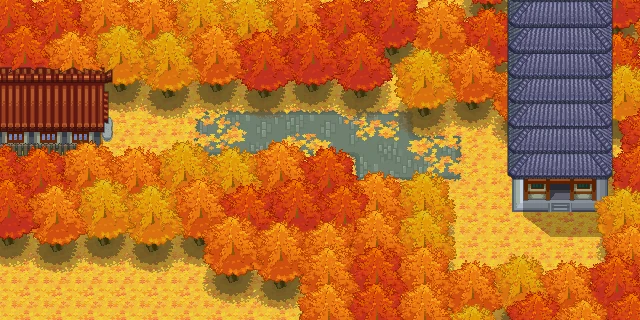
铃音小径是结界关口和铃铛塔之间的一条短路。据说不管什么季节，这里总是沐浴在夕阳中。
道具
 小蘑菇 ×3小路北边，从西数第二和第三棵树之间（隐藏道具）
小蘑菇 ×3小路北边，从西数第二和第三棵树之间（隐藏道具）
小路北边，从西数第三和第四棵树之间（隐藏道具）
铃铛塔西北角旁边（隐藏道具） 大蘑菇 ×2中北部区域，从西数第五和第六棵树之间（隐藏道具）
大蘑菇 ×2中北部区域，从西数第五和第六棵树之间（隐藏道具）
铃铛塔南边（隐藏道具）
铃铛塔
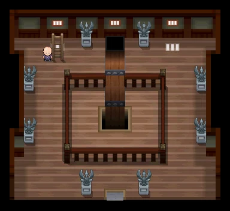
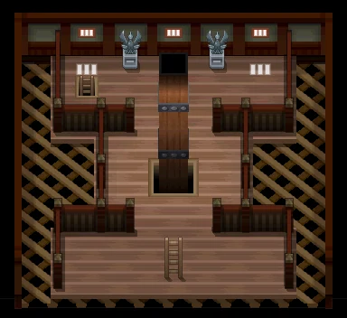
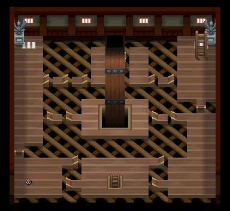
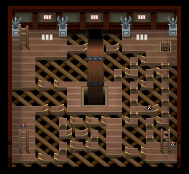
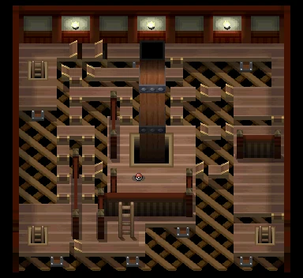
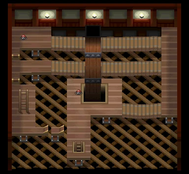
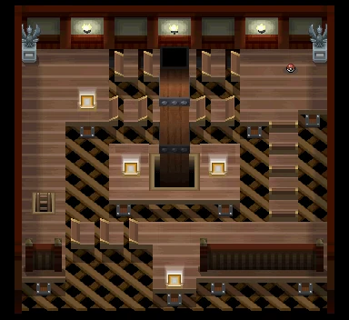
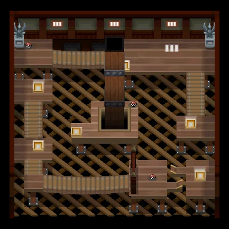
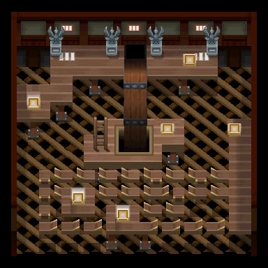
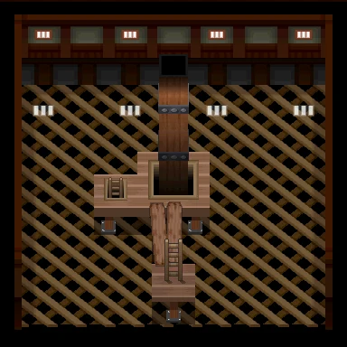
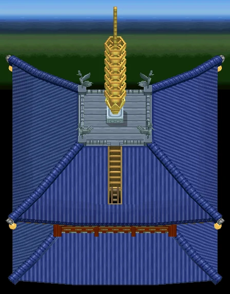
相邻↓ 圆朱市
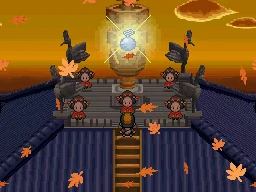
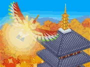
铃铛塔是一处圣地，只有少数人能进去。有圆朱道馆的迷雾徽章就能进塔，但只能到一楼。持有彩虹之羽和透明铃铛能证明你作为训练家的实力，两者合在一起就能到达塔的其他地方。
- 这一节现在只有心金玩家能完成。魂银玩家要以后才能拿到彩虹之羽，所以先跳到下一节，之后再回来。魂银版不需要透明铃铛，也拿不到。
可遇到的宝可梦
- 2F-10F
 小拉达2F-10F · Lv.20-24 · 早 100% · 日 100% · 夜 0%
小拉达2F-10F · Lv.20-24 · 早 100% · 日 100% · 夜 0%- 小拉达2F-10F · Lv.22-24 · 早 0% · 日 0% · 夜 20%
 鬼斯2F-10F · Lv.20-22 · 早 0% · 日 0% · 夜 80%
鬼斯2F-10F · Lv.20-22 · 早 0% · 日 0% · 夜 80%
道具
- 3F
 万灵药西南角
万灵药西南角 全满药中北部区域，往东的斜坡上（隐藏道具）
全满药中北部区域，往东的斜坡上（隐藏道具）- 4F
 高级球柱子东边，左边那条路
高级球柱子东边，左边那条路 ＰＰ提升剂东南梯子旁边
ＰＰ提升剂东南梯子旁边 离洞绳西南梯子附近
离洞绳西南梯子附近- 5F
- 神奇糖果柱子旁边
 全复药东偏南区域，去 4F 的楼梯北边（隐藏道具）
全复药东偏南区域，去 4F 的楼梯北边（隐藏道具）- 6F
- 全满药柱子旁边
- 万灵药西北区域
- 7F
 活力块东北角
活力块东北角- 8F
 ＰＰ多项全补剂中央，柱子旁边，从 9F 的传送板过去
ＰＰ多项全补剂中央，柱子旁边，从 9F 的传送板过去- 金珠南侧，柱子东南边，从 9F 的传送板过去
 速度增强剂北侧，最东边窗户下的光斑里（隐藏道具）
速度增强剂北侧，最东边窗户下的光斑里（隐藏道具）- 全复药北侧，西北角
- 9F
 ＨＰ增强剂北侧，中间两座石像之间，从 8F 的传送板过去
ＨＰ增强剂北侧，中间两座石像之间，从 8F 的传送板过去
1F
走近西北边的梯子，彩虹之羽会在你头顶浮起片刻。看到这件传说中的宝物，守在那里的和尚就会让你继续上塔。
3F
从三楼开始，塔里有一连串斜坡，用来迷惑想利用传说宝可梦做坏事的入侵者。拿西南角的万灵药，然后在这一层走一个大大的 S 形，到东北边的楼梯。
4F
往南跳过第一个斜坡，然后走西边的路拿高级球。继续往南拿东南角的ＰＰ提升剂。往西拿离洞绳，然后爬上西北边的楼梯。
5F
沿北墙跳过两个斜坡到东北角，然后往南再往西，在中央柱子旁找到神奇糖果。走东南边的路，到东南角的楼梯。
4F
往西走到西南区域，再次经过柱子，爬上西北边的梯子。
5F
往东跳过前两个斜坡，再跳往南的那个。往西越过下一个斜坡，然后往南走东边的路，到中南部的梯子。
6F
六楼是下面密集的斜坡和上面分散的传送板之间的过渡层。拿柱子旁的全满药，然后沿路逆时针走，在西北角找到万灵药。往南越过两个斜坡，到西边的楼梯。
7F
踩北边的传送板到中央区域，再踩下一个到 9F 东侧。南边有两个传送板。先踩右边那个，它通往 8F 中央的死胡同，那里有ＰＰ多项全补剂；左边那个通往 8F 东南的死胡同，那里有金珠。回到 7F 北边的传送板，拿东北角的活力块。往南踩南边的传送板，到 8F 西侧。
8F
踩南边的传送板到 9F 北侧。拿北墙附近的ＨＰ增强剂，然后踩西边的传送板到 8F 北侧。到了之后拿西北角的全复药，再踩中北部的传送板，被传送到 9F 中央。
9F（中央）
爬梯子上 10F。
10F
过桥，爬上最后一道梯子就到屋顶了。
屋顶
| 虹色之羽：凤王降临铃铛塔 |
|---|
| Zuki 和其他舞女在这里等你。她解释说，她们长年练习的舞蹈和透明铃铛的铃声，是再次从天空的巨大彩虹中召唤凤王的仪式的一部分。透明铃铛随即在你头顶浮起，女孩们在塔尖周围站好位置。透明铃铛和塔上的四个铃铛开始鸣响，女孩们随着一阵夕阳色的落叶翩翩起舞。铃声传到天空，片刻之后凤王降落在屋顶上。Zuki 说是你的心和透明铃铛的共鸣让它出现了，它一定一直在等待像你这样的人。 |
对战凤王
彩虹色的凤王回到了它的栖息地！先用水和电属性攻击快速削减它的体力，再用格斗、火、钢、草、虫属性招式进一步削弱它。可以考虑用睡眠、麻痹之类的异常状态限制它的行动，也记得带些回复道具。
↓ 下一站：41号道路
41号道路
漩涡群岛
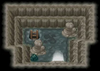
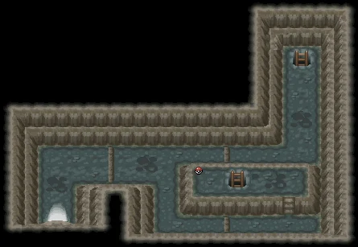
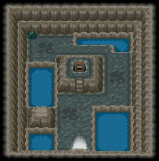
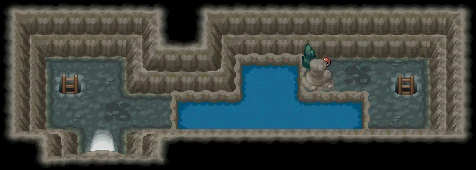
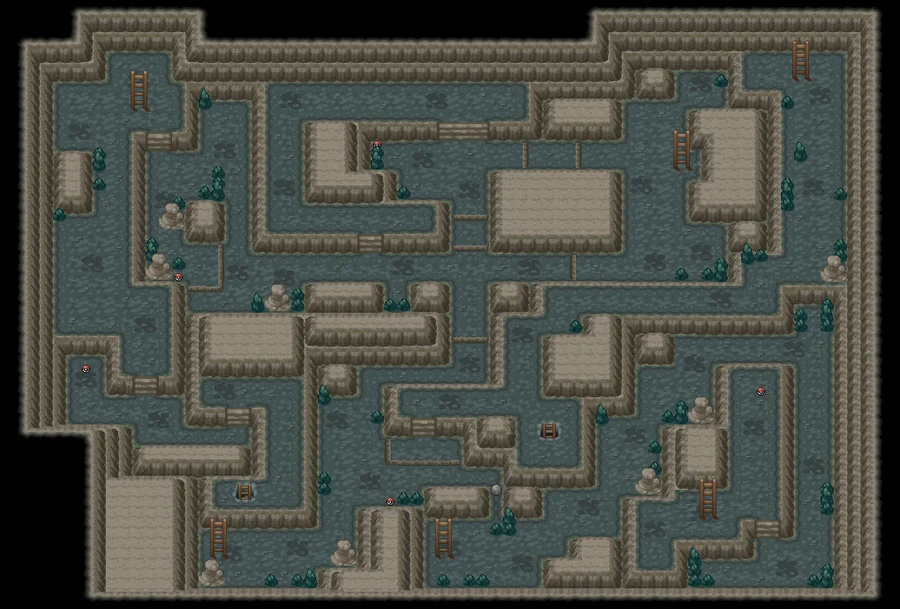
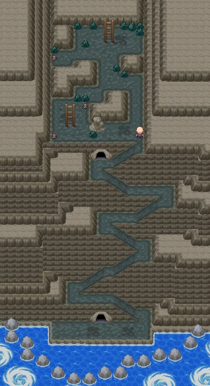
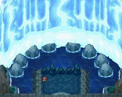
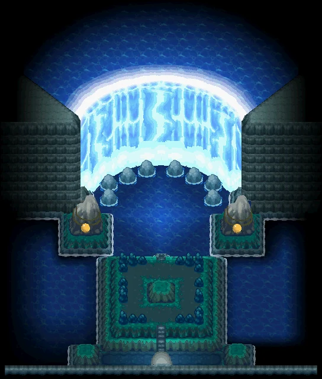
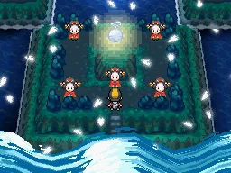
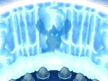
漩涡群岛在水下由一大片黑暗的洞窟相连，有些地方的海水和大石头会限制行动。虽然第一次来41号道路时就能看到这些岛，但没有冲浪、怪力和潮旋这几个野外招式无法完全探索，没有闪光也很难走。四座岛都能进入，但要找那只巨大的银色宝可梦，应该从东北边的岛进去。持有银色之羽和海声铃铛能证明你作为训练家的实力，两者合在一起就能进入海平面下深处一个隐秘的洞室。
- 这一节现在只有魂银玩家能完成。心金玩家要以后才能拿到银色之羽，所以先跳到下一节，之后再回来。心金版不需要海声铃铛，也拿不到。
可遇到的宝可梦
 超音蝠洞窟 · Lv.23 · 30%
超音蝠洞窟 · Lv.23 · 30% 大嘴蝠洞窟 · Lv.23 · 5%
大嘴蝠洞窟 · Lv.23 · 5%- 小海狮洞窟 · Lv.22, 24 · 15%
 大钳蟹洞窟 · Lv.22, 24 · 50%
大钳蟹洞窟 · Lv.22, 24 · 50%- 冲浪
 玛瑙水母冲浪 · Lv.15-25 · 60%
玛瑙水母冲浪 · Lv.15-25 · 60% 墨海马冲浪 · Lv.10-20 · 30%
墨海马冲浪 · Lv.10-20 · 30% 毒刺水母冲浪 · Lv.15-25 · 10%
毒刺水母冲浪 · Lv.15-25 · 10%- 钓鱼
 鲤鱼王破旧钓竿 · Lv.10 · 85%
鲤鱼王破旧钓竿 · Lv.10 · 85%- 大钳蟹破旧钓竿 · Lv.10 · 15%
- 大钳蟹好钓竿 · Lv.20 · 50%
- 鲤鱼王好钓竿 · Lv.20 · 40%
- 墨海马好钓竿 · Lv.20 · 10%
- 超音蝠洞窟 · Lv.23 · 30%
- 大嘴蝠洞窟 · Lv.23 · 5%
- 小海狮洞窟 · Lv.22, 24 · 15%
- 大钳蟹洞窟 · Lv.22, 24 · 50%
- 冲浪
- 墨海马冲浪 · Lv.15-25 · 60%
- 毒刺水母冲浪 · Lv.15-25 · 30%
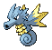
海刺龙冲浪 · Lv.10-30 · 10%- 钓鱼
- 鲤鱼王破旧钓竿 · Lv.10 · 85%
- 大钳蟹破旧钓竿 · Lv.10 · 15%
- 大钳蟹好钓竿 · Lv.20 · 50%
- 鲤鱼王好钓竿 · Lv.20 · 40%
- 墨海马好钓竿 · Lv.20 · 10%
- 超音蝠洞窟 · Lv.24 · 30%
- 大嘴蝠洞窟 · Lv.24 · 5%
- 小海狮洞窟 · Lv.23, 25 · 15%
- 大钳蟹洞窟 · Lv.23, 25 · 50%
道具
- 1F（东北）
- 高级球岩脊上，南边梯子附近
- 1F（西南）
- 高级球东边梯子附近
- 1F（东南）
- 神奇糖果西北角的岩石上（隐藏道具）
- B1F
- 速度增强剂中西部区域，西北和西南两道岩脊之间
- 珍珠西北区域，西北梯子往东几步的一根孤零零的石笋上（隐藏道具）
- 全复药西北的台阶上
- 金珠中北部区域，被 C 形岩脊围着
- 离洞绳中南部区域，大石头西边
- 高级球中东部区域，一条短死胡同里（隐藏道具）
 特攻增强剂东南角的岩脊上，梯子东北边
特攻增强剂东南角的岩脊上，梯子东北边- 高级球东南岩脊西北侧，两块小岩石之间的洞壁上（隐藏道具）
 白银喷雾东北区域，东北梯子西边一块孤零零的岩石上（隐藏道具）
白银喷雾东北区域，东北梯子西边一块孤零零的岩石上（隐藏道具） 活力碎片东北，三块岩石中间那块上（隐藏道具）
活力碎片东北，三块岩石中间那块上（隐藏道具）- B2F
- ＰＰ多项全补剂悬崖顶，南边梯子西边，从 B1F 过去
- 全复药悬崖顶，南边梯子东边，从 B1F 过去
北边梯子西北边，两块岩石之间的洞壁上（隐藏道具） - 活力块西北区域
- B3F（上层）
- 神奇糖果瀑布水潭上方突出的岩石上
从西北岛进入
1F（西北）
用闪光照亮四周，然后爬下梯子。
B1F
从梯子往南拿速度增强剂，然后爬下东南边岩脊上的梯子。
B2F（悬崖顶）
拿悬崖顶上的两样道具：西边的ＰＰ多项全补剂和东边的全复药，然后回到 B1F。
B1F
往西北回到第一个梯子，然后从岩脊往南，拿台阶上的另一个全复药。往东走过中北部的台阶，走下第二道楼梯往左拿金珠。往东跳过两道台阶，爬上梯子。
1F（东北）
拿岩脊上的高级球，然后爬回同一个梯子下面。
B1F
从这里往西南走，途中跳过两道台阶。拿中南部的离洞绳。附近的大石头从这边推不动，所以改爬西南边的梯子。从西南岛进来的入口在南边。
从西南岛进入
1F（西南）
从入口用冲浪往东。拿高级球，爬下梯子。
B1F
往东北走，再往南到东南区域的岩脊。拿这里的特攻增强剂，爬上梯子。
1F（东南）
从东南岛进来的入口在南边。
从东北岛进入
1F（东北）
跳过第一道台阶，继续往东，跳下接下来两道台阶中最北边那道。爬下东北角的梯子。
B1F
沿岩脊往西南走，爬下下一个梯子。
B2F
拿西边的活力块。和悬崖边的男人说话，银色之羽会在你头顶浮起片刻。看到这件传说中的宝物，男人就会让开，让你继续沿悬崖往下走。走下斜坡，进入第一个洞口。
B3F（上层）
B3F 有一个巨大的瀑布水潭。拿上层突出岩石上的神奇糖果，然后回到 B2F。
B2F
继续沿悬崖往下走，进入下面的洞口，到达瀑布水潭。
B3F（下层）
| 银色之羽：洛奇亚从瀑布水潭现身 |
|---|
| Zuki 和其他舞女在这里等你。她解释说，她们长年练习的舞蹈和海声铃铛的铃声，是再次从瀑布水潭召唤洛奇亚的仪式的一部分。海声铃铛随即在你头顶浮起，女孩们在岩石平台周围站好位置。海声铃铛和瀑布两侧的两个铃铛开始鸣响，女孩们随着一阵银色的羽毛翩翩起舞。水幕上出现了一个有翅膀的影子，片刻之后洛奇亚现身了。Zuki 说是你的心和海声铃铛的共鸣让它出现了，它一定一直在等待像你这样的人。 |
走下平台北侧的楼梯，用冲浪游到传说的宝可梦那里。
对战洛奇亚
银色的洛奇亚现身了！先用岩石、电、冰、幽灵、恶属性攻击快速削减它的体力，再用草、超能力、格斗属性招式进一步削弱它。可以考虑用睡眠、麻痹之类的异常状态限制它的行动，也记得带些回复道具。
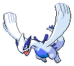
洛奇亚Lv.70 · 超能力 / 飞行洞窟里没有出去的捷径，所以用离洞绳是最快的出去方法。
从东南岛进入
从东南岛进入最终会通到西南岛的入口。从这个方向能拿到的道具只有特攻增强剂和高级球，到这时你应该已经拿过了。
↓ 本篇到此结束：继续下一页
原文：Bulbapedia《Walkthrough:Pokémon HeartGold and SoulSilver/Part 14》（修订版本 4569683，），作者见原文页面历史。本页由 Eli 的杂货间翻译为中文，并有改动（重新排版、精简部分图注）。原文与译文均以 CC BY-NC-SA 2.5 授权。配图来自原站，版权归原作者与游戏厂商；地图截图和人物图来自 Bulbagarden Archives，游戏画面版权归 Nintendo / Game Freak / The Pokémon Company。道具与属性图标来自 PokeAPI sprites。